#DeLit-day
--------------------------------------------------------
Prototyping with Adobe XD
#DeLit-day Tutorials, essential-skills for everyone.
Summit Handout June 2020
--------------------------------------------------------
Modules
1->Why XD?
-1- Why XD?
Prototyping is a fast way to visualize the look and feel of the final product. It also provides clarity on how to proceed with the production.
XD stands for Experience Design. With Adobe XD you can make high-fidelity[1] prototypes for your websites and apps. You can have XD on both Windows 10 and OS X, and its companion app on Android and iOS.
At the Design Club, we use XD for designing pretty much anything digital, ranging from e-cards to website prototypes. Prototyping tools use the RGB[2] (pixel based) color system and is to be used only for digital works. If print is involved you have to work with tools supporting the CMYK[3] (ink based) color system. XD is fast, free[4] and fresh. The interface is user friendly, has all the necessary tools and features a huge plugin collection.
The other prototyping tools we use are[5]-
InVision Studio - Dark mode, gives a more complete feel but processor heavy and logs you out on exit.
Figma - Features an excellent pen tool and auto-layout which allows you to resize and rearrange components responsively. Very cool but needs practice. You can use it on a browser!
Marvel - We use marvel for war-mode[6] prototyping. It-s best for designing wireframes[7] or testing an idea. You-ll love the mobile app which allows you to make a quick mockup using only snaps and sketches.
Other quick prototyping apps you can try are Framer and JustinMind.
So, why XD over these tools?
Well - apart from the point already stated, XD is an offering by Adobe and integrates extremely well with the Creative Cloud family[8] and team platforms like Slack and Jira.
The theory applies the same for all the tools. If you learn one, you-ll be good on another. The rest is practice and style.
Enough said. Let-s get started. ✨
-2- Getting Started
Part 1
If you already have a Creative Cloud account and the app, proceed to install XD from the Creative Cloud App. If not, follow steps ahead[9].
First, you need a Creative Cloud (CC) account. Create one here.
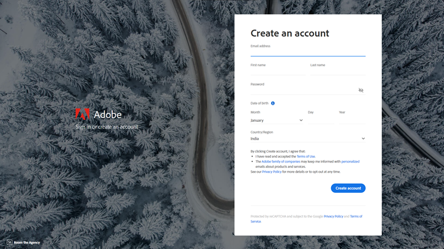
Follow the recommended steps and sign in to CC Web. You can now download the CC App.
All Adobe products can be installed and managed via this app. Once you have it installed, proceed to install XD via CC App. The CC website will make things easier for you by prompting the CC App to download XD for you.
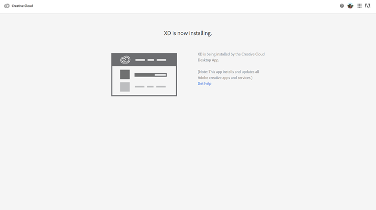
Once XD is installed, you should be able to see it on the CC App Dashboard
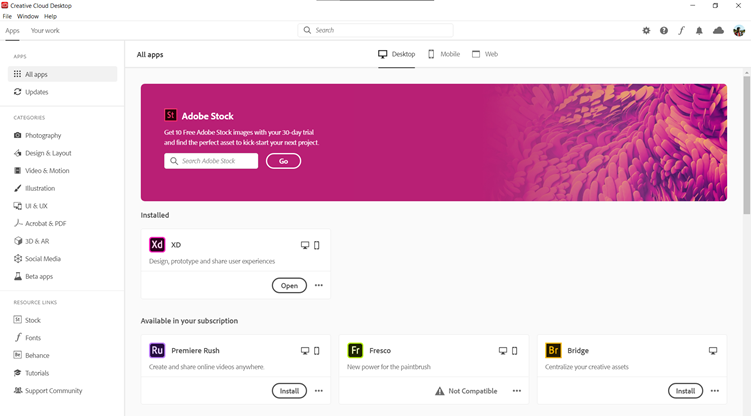
Part 2
Hmm-What have we got here!
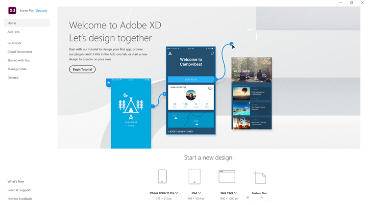
To the left is the menu. You have-
Home - basically the dashboard, shows your recent files (if you have any) and options to create a new project by simply specifying screen dimensions[10] or selecting one of the given screens. In case, you don-t know the pixel dimensions, enter your favorite numbers for the custom size width (W) and height (H) and skip ahead. Once in, you-ll get a fuller collection of screen-sizes to choose from.
Add-ons - This will show you plugins, UI kits and app integrations. If you are tempted, sure, install a few.
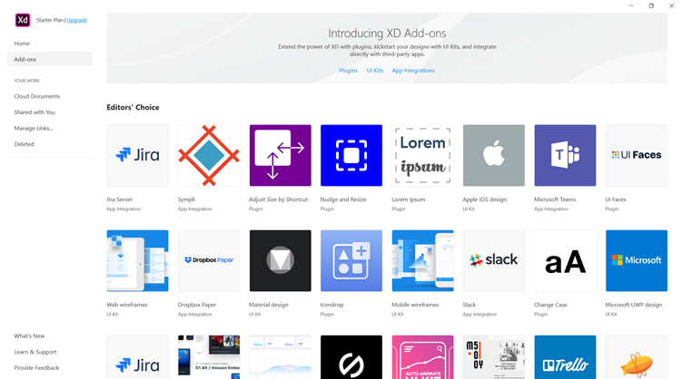
Next up, we have the -Your Work- section, which provides you with options to manage your creative cloud assets.
Cloud Document - the prototypes you saved on cloud i.e. Creative Cloud.
Shared with you - the projects you have been invited to, for editing or reviewing. This is a collaboration feature.
Manage Links - forwards you to CC web with your shared prototypes and design specs and all of your cloud-saved works.
Deleted - the recycle bin for your cloud projects.
Further up, we have other options which are mostly assistive or informative in nature and will most certainly forward you to webpages.
For now,
go to -home-, select a screen size and take the leap. Time to learn the tools
of trade.✨
-3- The tools of trade
Part 1
You-ll see buttons and options everywhere.
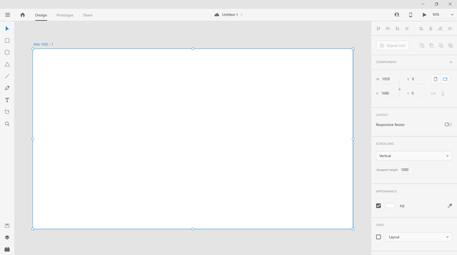
The white rectangle you see in the middle is the Artboard. Artboard = Screen. On the left are the tools of trade.
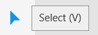-The Select tool is used for selecting an object[11] or selecting a group of objects either by holding down Shift key while selecting or dragging over the objects while left-clicking on the mouse/touchpad. Given in bracket i.e. -V- is the keyboard shortcut to switch to this tool. Keyboard shortcuts are for power-users[12].
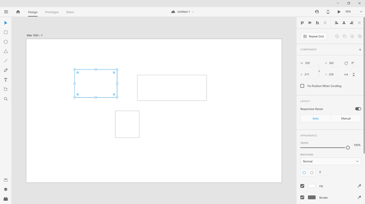
Once you make the selection. You can edit group attributes, resize[13], rotate[14] or delete this set of objects by pressing Delete key. The pane on the right will allow you to modify attributes or arrangements of the object(s). Different type of objects will have different options.
After Select is a list of tools for making objects.
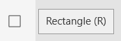-You can make a rectangle by click-dragging. The Shift, Alt rule[15] applies here and to all objects[16].
Occasionally, you shall see blue and pink lines while dragging objects, these are smart guides and helps in object alignments (blue) and maintaining uniform spacing (pink). Press Alt on selecting an object to make a quick reference.
Regular copy, paste commands (Ctrl + C/V) works on XD but you also have duplicate (Ctrl + D) which makes a copy of the object, on the object and reference copying (hold Alt while dragging an object) to instantly create and move a copy. You can use the arrow keys (hold Shift to speed up) to move objects accurately (up to 1 pixel).
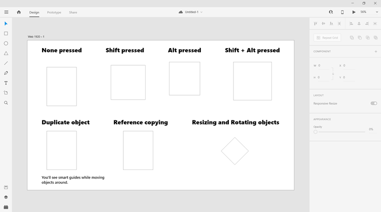
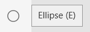
Similarly, you can create a circle (hold Shift) or ellipse with the Ellipse tool.
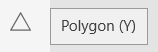
Polygon tool is used for making polygons i.e. shapes with more than 2 sides e.g. triangle or pentagon.
The default shape is a triangle. You can edit the number of sides on the right pane under Appearance.
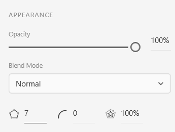-
A cool addition is the star ratio which allows you to break the sides in half and create interesting shapes.
Also, you can set corner radius for all polygons.
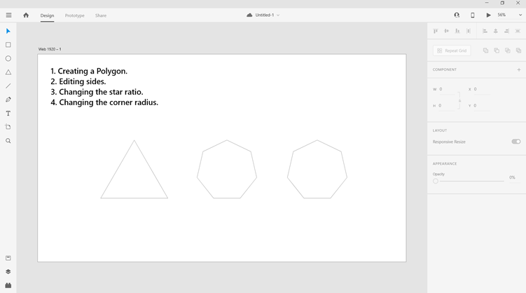
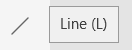
Next is the line tool, select and click-drag to create a line. Hold Shift to create/move a line at multiples of 45- (also true for pen tool). You can drag the end points to place the line wherever you want.

The pen tool allows you to create custom shapes. Click to set a point, the next click will create a line connecting these points or if you drag then it-ll create a curved line[17]. Press Esc to break or continue to create a shape. This tool requires some practice to get used to but is very versatile.
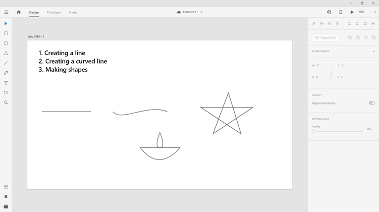
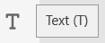
Typography is central to any good design. And it usually happens that you spend half the time if not more, working on it. Select the tool and click-drag to create a text box or you can directly start typing with a click. You can change the font, font size, font weight, spacing and more[18] from the right pane. There are two types of text boxes. The regular is called -Area Text- and resizes the -text box-, the other is -Point Text- and resizes the -text- on dragging by the sizing-points.
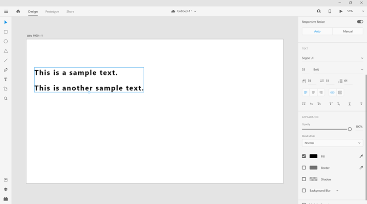
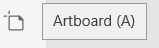
When you click on artboard tool, the right pane shows a collection of screen sizes for popular devices. Select one and the artboard shall be inserted. Else, if the desired size is nor listed, you can drag and create your own custom artboard. Press Ctrl + D by selecting the artboard to replicate it. Double click on the artboard name to rename.
If you want to add an image, simple drag and drop on the board or go to menu and click Import. You can also draw an object and drag the image on the outline to mask it to that shape. You can also do this on a text. Select the text box, right-click to open the context menu and select Path -> Convert to path[19] (Ctrl + 8); then drag and drop on the outline.
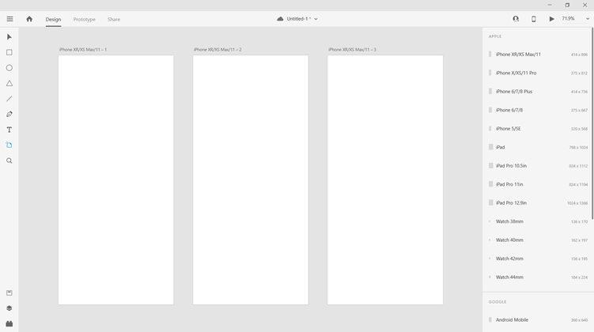
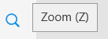
Lastly, we have the Zoom tool. You can use it to zoom in in or out of the artboards. You-ll find the zoom percentage on the top right corner in the ribbon.
We recommend using shortcuts for zooming.
Ctrl + 0 - fit board to screen; Ctrl + 1 - 100% zoom; Ctrl + 2 - 200% zoom; Ctrl + +/- - Zoom in/out 25%; Ctrl + 3 - Zoom to selection.
Press Ctrl + S to save the project.
Part 2
Continuing further down, we have the Assets, Layers and Plugins.
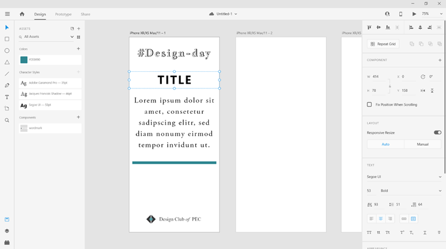
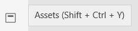
Assets allows you to select an object and save its colors, character style or itself as a component. This helps in creating a Design System and you can quickly reference this library to maintain a consistent design. Simply select the object and click on the Add button beside Color/Character Styles/Components to add the subsequent attribute.
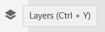
All objects are arranged in layers/stack. The artboard acts as the base layer and above that, is up to the user to arrange. What the final protype will show is the top view of the layers i.e. if a portion if an object comes under another object then it becomes hidden. You can quickly arrange the layers for an artboard from this pane.
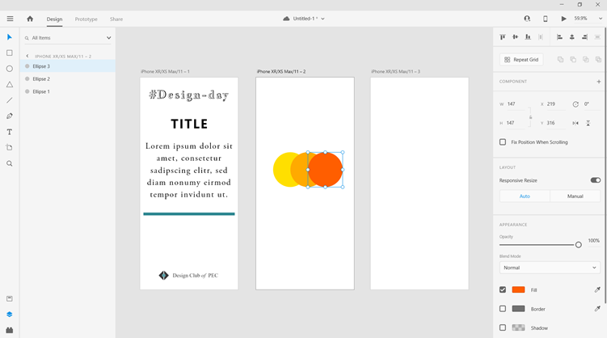
You can use these shortcuts too -
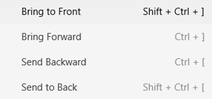
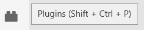
The plugin button will open the list of installed plugins. You can access the plugin services from here.
On the top you-ll find some buttons on the ribbon-
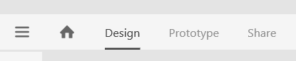
First, we have the menu, clicking it will open up a list of project options. The Home icon will direct you to the XD Dashboard. Design, Prototype and Share are three workspaces for the prototype. You could see it as Design -> Prottotype -> Share.
By dafult a new project opens up in the Design workspace. Here, we craft the looks of the prototype. In Prototype workspace, we can create a logical flow for the prototype function. Say, on click of home button, open the Home screen; we can simply connect the button and the artboard by dragging a connector and assign some animation to it. More on it after we-re done with the design. The Share workspace is for collaborative review of the prototype.
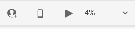
On the right, we have the Invite to Document button, which will create an instant link people can use to join and edit the prototype, live. The Mobile preview will enable you to view the prototype on the XD app on phone. The Desktop Preview button will open the prototype for live preview complete with it-s function (you need to do the necessary in Prototype workspace). Then we have the zoom percent. You can use the drop down to select a zoom percent or directly enter a number.
Part 3
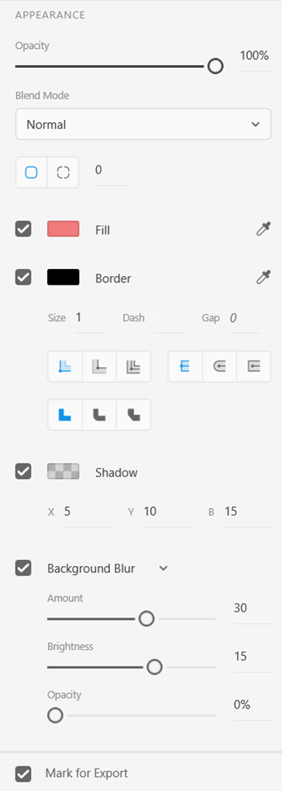General attributes for an object are the fill, border and opacity. You can access the complete list under the Appearance section on the right pane.
100% opacity means 0% transparency. You can drag and change the opacity for the selected object.
Blend Mode is an advanced feature. It sets how an object blends with it-s underlying layer. This looks good on text over image. For now lets work with Normal but be sure to try it out. These effect gives a sophisticated look to the design and is easy to produce[20].
Next we have the corner radius. We can set the same corner radius for all corners of a rectangle or choose the dotted box buton to set different points for each corner. Simply press up or down arrow to increase/decrease the value.
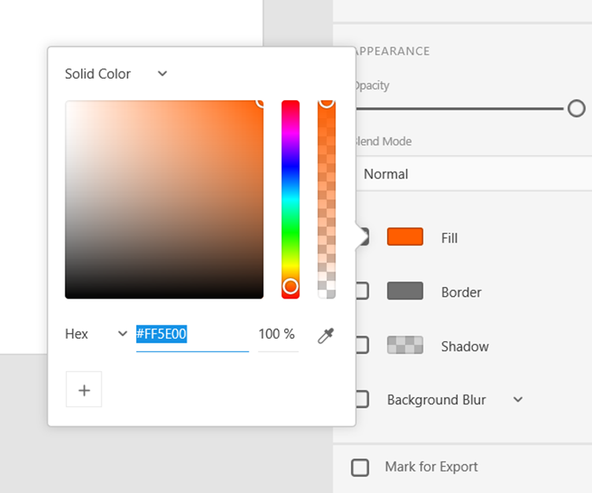
The Fill is the color of the object. Check or uncheck it to enable/disable fill. You can change the color by clicking on the color. You can pick a color or directly enter Hex/RGB/HSB[21] code of a color.- Also, you can change the fill type to gradient[22]. You can also pick a color from the screen using the color picker.
Save a color by clicking on the plus button.
The border is the outline for the object.
Shadow enables you to create a depth and height effect for the object.
Background blur is another advanced featue. With this you can either blur the object or the backgroud.
Below that, we have the mark for export option. This check the item as eligible for batch export. You can batch export items from the Export option in menu[23].
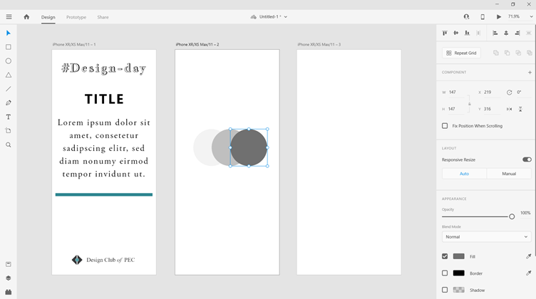
Well - the only way to really learn using a tool is to use it; so, please keep exploring.
Part 4
Here, we shall go through the other options on the left pane.
This is better shown than said. Artboard grids shall be discussed in the next module.
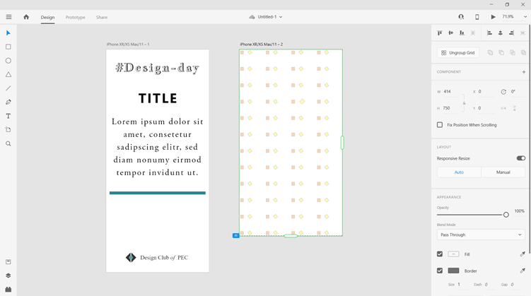
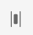-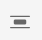-
The Distribute arragement buttons align the objects by uniform spacing either horizontally or vertically[24].
While making a pattern, making changes to the first copy (the component/object you are making a pattern of) will result in changes to all the other copy of the component in the pattern. But making changes to any other copy, change will not reflect on the whole pattern. You can ungroup the grid to break the relations and retain the grid elements as individual components.
After the arrangement options you-ll find the dimention and position attributes of the object. 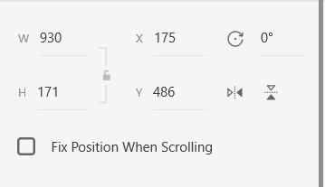W and H is the height and width of the object. Click on the lock icon to lock the dimention. X and Y is the relative position of the object on artboard[25]. Then we have the rotate and mirror options. If you check the -Fix position on Scrolling-, the object will be fixed to that position on scroll (while viewing the prototype). This is usually used for the header or floating buttons/messages.
Oh! and another important shortcut - Ctrl + Z (Undo) and Ctrl + Sihft + Z (Redo).
Select a group of object and press Ctrl + G to group it. Grouping object(s) will make it a component or behave as a single object. Press Ctrl + Shift + G on the same object to ungroup.
Press Ctlr + L to lock the position and attributes of an object and Click on the lock icon that apprears to unlock it. Other such options can be accessed from the context menu that pops-up on right-clicking.
You now know all the tool you-ll need to make your prototype[26]. But even with the skills, to make a great prototype you need a good conception. Let-s see how to turn a concept into design.✨
-4- From concept to design
It is much easier to change a product early in the development process than to make change after you develop the site. That-s why we create prototypes to drive the development of the end product. There are different disciplines involved in formulating a product experience (read prototype) - UX (User Experience), UI (User Interface), HCI (Human Computer Interaction), IA (Information Architecture), etc. not to mention working closely with the client, developers and operations team. Here, we shall just dive into the pool instead of the ocean. Let-s call it Rapid Prototyping.
Prototypes are categorized by their level of fidelity i.e. low fidelity, mid fidelity and high fidelity.
XD is meant for high fidelity prototyping but we could use it for all the categories of prototyping.
When you conceptualize the end product, start with a rough sketch. It should clearly describe the purpose of the product and should be suggestive on exploration. -Reviewing and Refining is integral in prototyping and starts from this step.
The sketch could be anything from user journey (mapping how user(s)[27] would land on your site and make choices) to a rough wireframe.
Wireframes acts like a blueprint for the product. Here we use what-s called a placeholder (see rectangles) to represent visual or design elements and focus only on the structuring of the prototype. Advanced wireframes are mid fidelity instruments and have functional clarity with higher detailing and connectors[28].
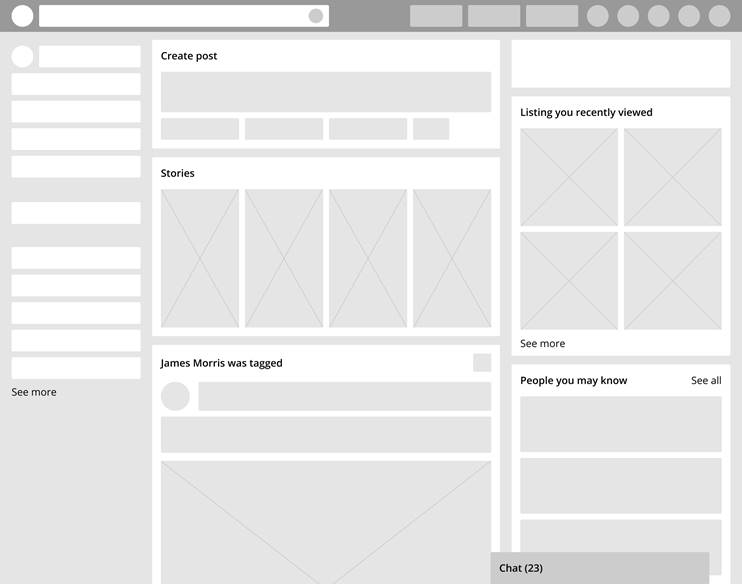
The wireframe is used to validate your concept. If all looks good then we refine it into a Mockup, which is a high-fidelity prototype having a visual resemblance to the final product but without any functional detailing. When we provide functional detailing (what happens on click et al) the design becomes a Prototype.
When making the wireframe it should clearly show the product components i.e. form elements (e.g. text area), buttons, nav bar, menu etc. Media/text content may be represented by a sample or placeholder content throughout the process (if not explicitly required). Proper hierarchy of information and function should be maintained i.e. header should stay at the top, footer at the bottom and so forth. The different navigation patterns should lead to all the possible states of the product[29]. All the states and artboards should be named appropriately e.g. Home, Home (menu active). Try to just keep outlines for the wireframe; if layers and modules are involved try to give shades of a colors[30] to mark the difference.
-After doing the rough sketch on paper, you can start the wireframe design.
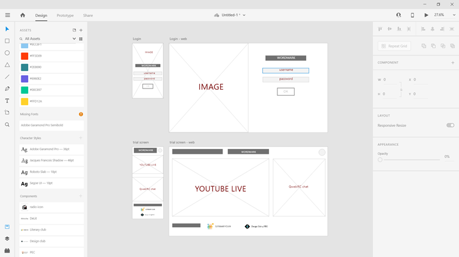
Additionally, you can make a prototype on the wireframe by connecting the artboards in the prototype view.
You can consider using grids in the design process as a good practice. Most, importantly it helps in website designing to visualize responsiveness for different screen sizes. The two types of grids supported in XD are - Layout and Square. You can select an artboard and find the option under the side pane. Usually website frameworks like Bootstrap works on a 12-column layout grid system.
-5- The design system
While making an app or a website, it is very important to visualize the end product and design according to it. A systematic step to do this is to create the design system. The design system is a compilation of fonts, color and other components (say buttons or fields) to be used in the app/website. For bigger projects with branding needs, guidelines are even present as to how to place the components. You may reference some great design systems by popular companies here -
Another thing to keep is mind is the alignment and spacing is usually not considered important while designing while in reality it is half the design.
For our website, we want a clean look with bold styles. To achieve this, we give importance to the font and keep a minimum color palette. The font is synonymous with confidence in the design world. While determining the fonts, you may choose fonts that stands out or blends; but, the fonts in combination should present harmony.
You may create your own hierarchy for the fonts, its size and styling e.g. Header (Times New Roman - 24 - Bold), Paragraph (Segoe UI - 18), Quotes (Segoe UI - 18 - Italics). For websites you may define styles for the headers (<h1> - <h6>) and paragraph (<p>).
You may try out font combinations and download the fonts from https://fonts.google.com/ .
Colors are another important element; it gives character to the design. Its preferable to have a primary color palette to reflect the brand and a secondary color palette to support the primary color.
You may try out color combinations at https://colorleap.app/home
The color hex code should be obtained and it should look something like #000 000[31].
The other things that are included in a design system are the different components like the logo, icons, wordmarks of the brand or different form elements (buttons, fields etc.). Proper wireframing is important to identify the required components and it is recommended to refer popular design systems for the components like icons and form elements. If you-re using a framework like Bootstrap for web-development you get templated form elements and it is usually not required to redesign these.
The thing to keep in mind is that there is no limit to creativity while designing but unlike banner or magazine designs there are certain considerations to be made here in the development phase like a choice between look and performance. A reality check[32] often occurs but working closely with developers will give experience and ideas. Ultimately the goal is to impress the user and performance is an important determinant.
For our website in demo we consider the following minimalistic design system -
1. Fonts (Given directly in respective fonts)-
Title - 46 pt
Header 1 - 24 pt
Paragraph 1 - 18 pt
Paragraph 2 - 18 pt
Quotes[33] - 18 pt
2. Colors
-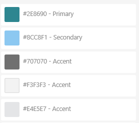
3. Components
-
a. PEC logo
b. Literary Club of PEC logo
c. Design Club of PEC logo
d. DeLit-day wordmark
These elements are simply put in any artboard and added as an asset in the -Assets- library to maintain our design system.
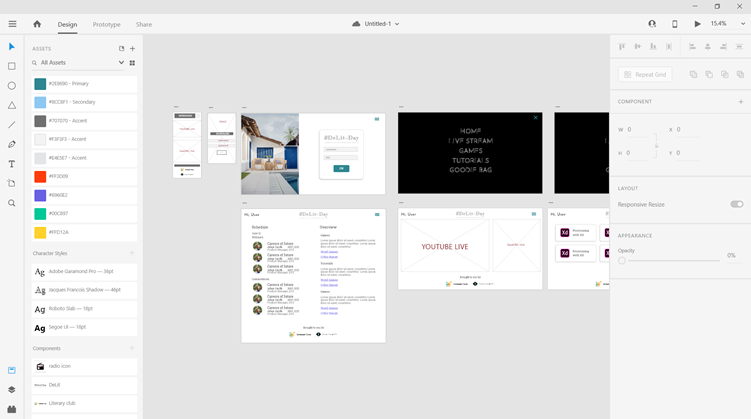
After creating the wireframe and preparing the design system
you can now start the prototyping.
-6- Prototyping a website
The easiest way to start prototyping is to apply the design system into the wireframe, including the sample media elements like photos.
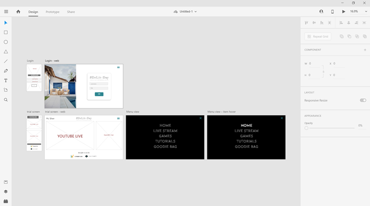
Here, we-ll consider the login page and other sample pages for prototyping.
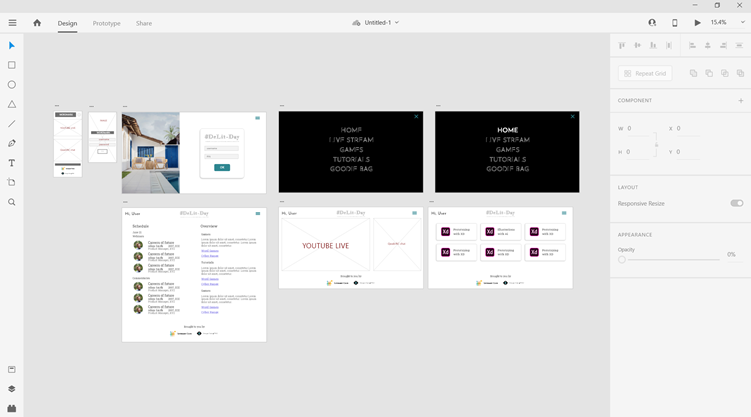
Once the screens are ready, we can shift from design mode to prototyping mode. Click on any component and connect the cable with the page it opens; that is the basic logic. Now, in XD we have features like auto-animate which helps in case you have micro-interactions[34] within the same screen.
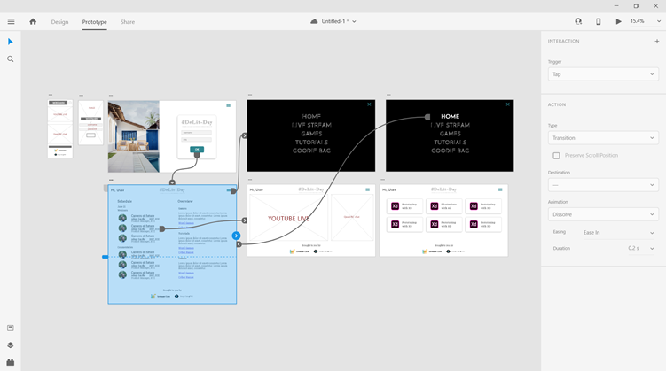
After making the connections in prototype view, press the play button in the top right corner to view the prototype. Unless a particular screen/artboard is selected, the play button starts the homepage. The homepage can be selected by marking the side tag after selecting the screen.
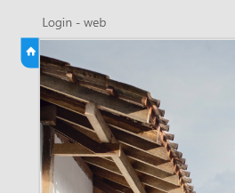
-7- From design to production
A prototype is as good as it can be developed. So, the handover process is important. On XD you can click on the share option on the top bar and then click update link to create a link where the developers can refer the design. This shows the HTML and CSS for the design and is helpful for checking the object alignments and properties.
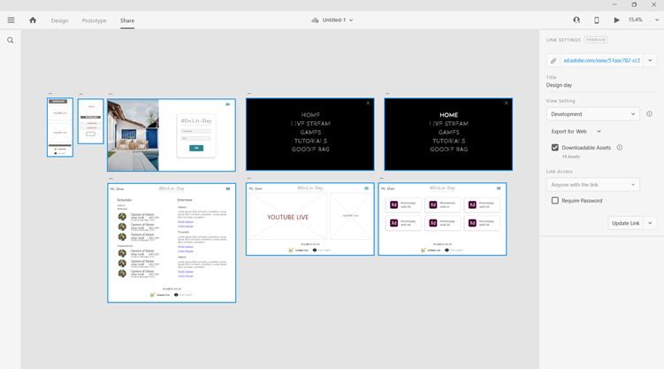
Once you visit the link you can view all your screens.
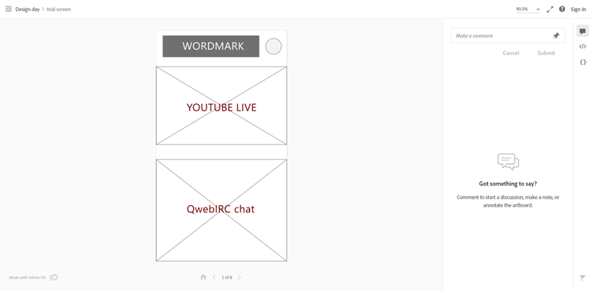
This feature can be utilized in two ways - to share comments on the screen and to get the object styling of the screen elements. For the first, you can type your comments on the -make a comment- field on right. If you would like to view the codes then select the code icons on the right-side pane under the comment icon -
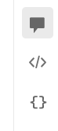-
If you click on any component of the screen, it should give you the CSS properties of the components. Also, you can download the assets as an image.
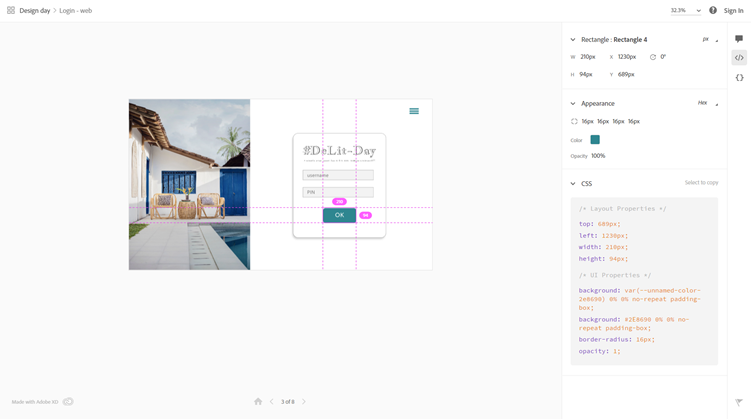
The developer has a significant role to play as XD can not distinguish between shapes and actual form components.
Additionally,
you could use a plugin like Zeplin to share the design with your team and get
more advanced handover features.
- Conclusione -
Complete the quiz below to complete this tutorial. Thank you.